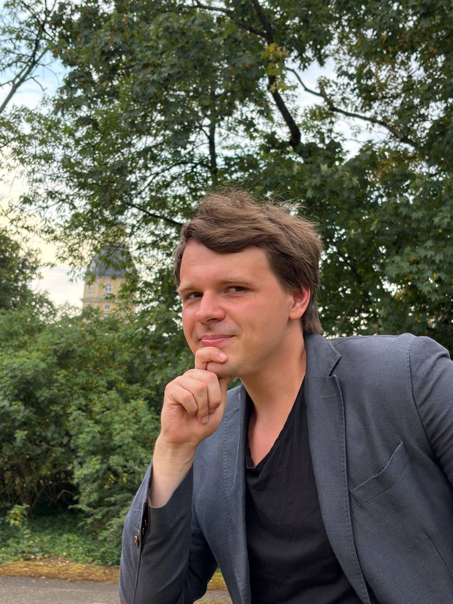

Обо мне

Я Backend-разработчик с опытом работы в крупном e-commerce (Wildberries). Специализируюсь на языке Golang, проектировании баз данных и развертывании отказоустойчивых сервисов.
С 2023 года живу в Германии (Карлсруэ), активно интегрируюсь в местную среду и продолжаю изучать немецкий язык.
Есть опыт работы с высокой нагрузкой, доработки и создания программной архитектуры для передачи больших массивов данных. Для меня Go — один из самых перспективных языков для современных корпоративных систем, тем не менее я всегда открыт к новым технологиям.
Опыт работы
Backend Developer
Wildberries • Июнь 2021 — Май 2022
Крупнейший e-commerce ритейлер
- Разработка и миграция бэкенд-сервисов на Golang.
- Взаимодействие с базами данных (OLAP и OLTP), оптимизация запросов.
- Анализ и устранение системных алертов, решение проблем с производительностью под высокой нагрузкой.
- Совместная работа с командами Frontend, DevOps, DB и Backend.
Стажер бизнес-аналитики
Национальный Расчетный Депозитарий • Июнь 2019 — Сентябрь 2019
- Обработка и анализ данных о сотрудниках, аутсорсинге и рабочих часах.
- Поддержка и обновление внутренних систем и таблиц.
Хронология пути
Вынужденный переезд
Из-за политического преследования покинул страну. Жил в Грузии, затем в Армении. Время активного самообразования и поиска работы на международном рынке
Переезд в Германию (Карлсруэ)
Начало новой главы. Интеграция, жизнь в общежитии и погружение в языковую среду.
Языковая интеграция и B1
Интенсивное изучение немецкого языка. С апреля 2024 по май 2025 года — успешная сдача экзамена на уровень B1.
Путь к B2 и упорство
Подготовка к B2. Сдача далась непросто: дважды не хватило долей балла (2.5 и 0.5), готовлюсь самостоятельно к сдаче B2, потом хочу сдать на C1. Параллельно продолжал изучать IT-стек и новые технологии.
Технические навыки
Языки программирования
Базы данных и хранение
DevOps & Инфраструктура
Архитектура, протоколы и мониторинг
Языки
🇷🇺 Русский
Родной язык
🇬🇧 Английский
B2. Свободно читаю техническую литературу, поддерживаю средний уровень общения.
🇩🇪 Немецкий
B2 (Сертификат). Сдал экзамен. Для экзамена B2-Berufssprachprüfung (профильный немецкий) не хватило 0.5 балла, планирую пересдачу.
Непрерывное обучение и интересы
Московский институт радиотехники, электроники и автоматики (МИРЭА)
Неоконченное высшее • 2017 — 2021
Направления: Программирование, Бизнес-аналитика.
Искусственный интеллект
Интересуюсь ИИ с 2019 года. Имею практический опыт разработки софта для сканеров и терминалов идентификации (распознавание документов и номеров машин).
Ранние технологии
Со школы изучал C++ и Python. В университете — Java и C#. Самостоятельно изучал Ruby on Rails (2019).
В планах...
Здесь скоро появится информация о моих новых исследованиях, пет-проектах и целях на ближайшее будущее.